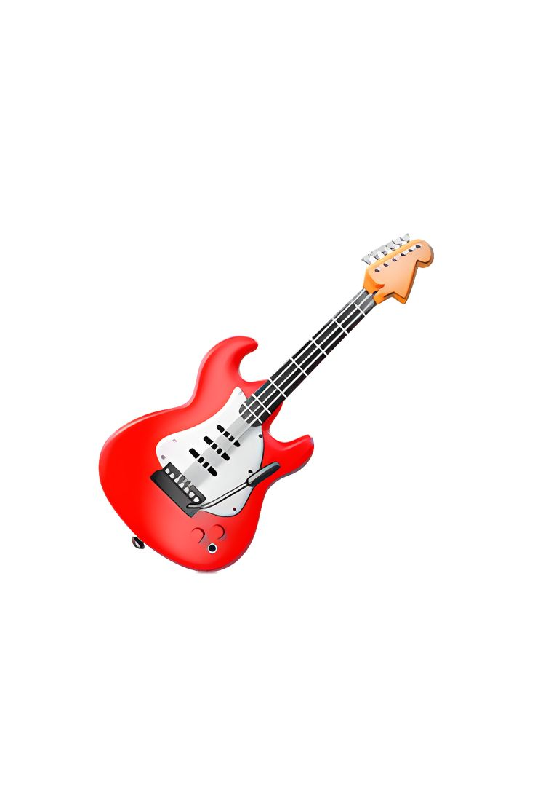
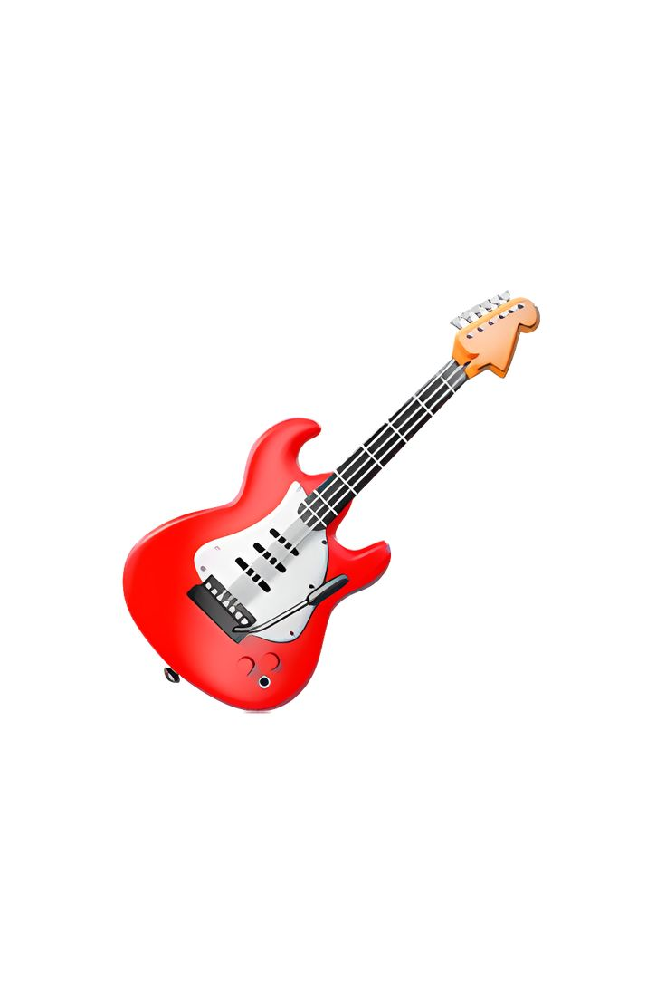

Dungeons and Dragons
Dungeons and Dragons is a fantasy tabletop role-playing game (TTRPG) created the 1970s, the game uses your imagination to roleplay your character in a fantasy world, and uses your strategic thinking to overcome obstacles. Truth be told, I have not played the game in person before but I watched many people played them and it looked so fun! I even have a few miniature that one day I hope I can use them in an actual DND session.
Video Games
I grew up playing video games, I enjoyed playing them very much whenever im not doing my other leisure activities i would play video games on my laptop to destress. one of my current favourite video game is Solasta:Crown of The Magister, which is digital version of Dungeons and Dragons.
 

Music
This is the most recent interest I have, I don't usually listen to music while I do work but now that I do, music makes the work less stressful for me. my current favourite artist is Hazama and his old songs, his songs just get me on a nostalgia trip when I was still in school.